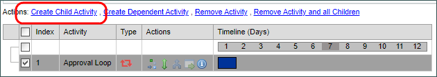
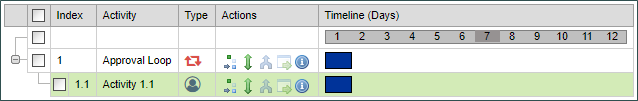
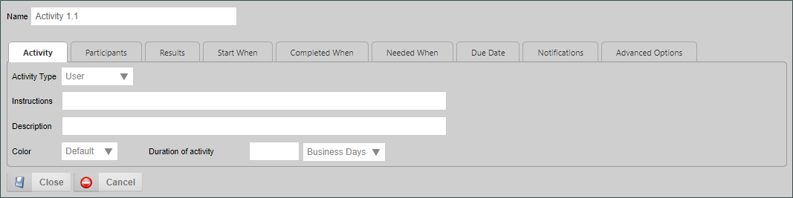
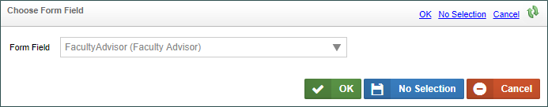
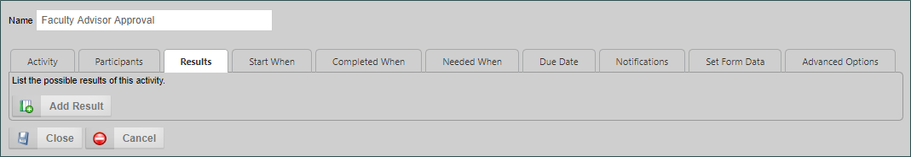
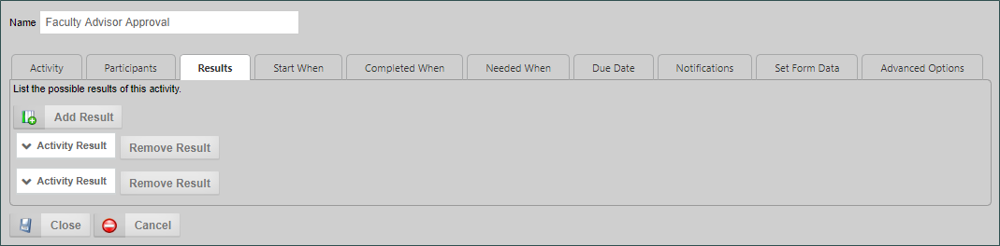
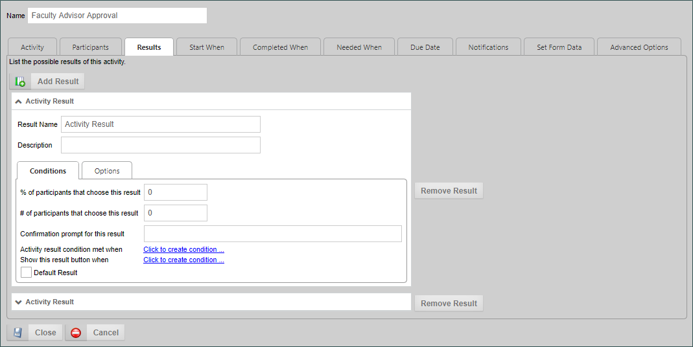
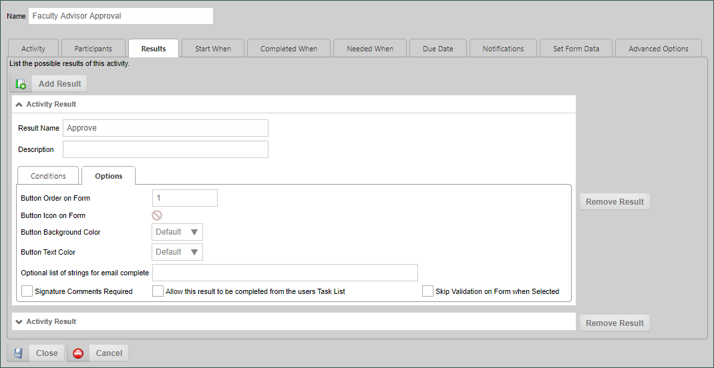
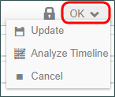
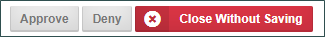

|
|
Lesson Contents | In this Lesson, you will learn how to configure User activities in a Process Timeline. |
By default, any new activity you create in a Process Timeline will be an activity of the User activity type. This is by far the most common type of activity you will use. As mentioned previously, a user activity specifically assigns a task to a user or a group of users. The activity ends when the assignee(s) complete the activity, usually by selecting a result on a form. In future lessons, we will cover some other, more complex methods for completing activities without user action, but at this point, we will assume that all of our activities will be completed by a simple form interaction.
In the last lesson, we created a Parent activity that will serve as the container for the User activities that will make up our approval loop. In this lesson, we will create the actual user activities, along with the constraints that ensure each activity will occur at the proper time, and in the proper order.
An important thing to remember about Parent activities is that they do not have an independent life of their own. In general, a Parent activity begins automatically when the first child activity begins, and the Parent activity ends automatically when the last child activity ends. Parent activities do have results, but the result of the parent activity is usually based on the result of the last completed child activity. Parent activities are useful containers for the activities that actually perform the process model, especially in cases like this one, where we want to use the Parent activity to stop the process from running if approval is denied.
So, if we were to run our Process Timeline in its current state, nothing would happen. The Timeline would start, of course, but, since Parent activities have no life independent of their children, the process would simply end immediately. We need to create some child activities that assign tasks, or perform other actions, to give life to our process model.
If your Change of Student Major Timeline is not already open, open it, then click the check box on the left side of the Approval Loop activity.

Once you've checked the box, some new action links will appear at the top of the Gantt chart. We want to click on the Create Child Activity link to create a child activity under the Approval Loop Parent activity.

Note that the new activity, which is currently named "Activity 1.1", is indented below the Parent Activity. This is the visual indication that the activity is a child activity of the approval loop.
We can create additional child activities by repeating the process as needed. Ultimately, we will add an additional four activities for a total of four user activities. Each time we add an activity, we will click on the Approval Loop's check box, and click the Create Child Activity link, to ensure that all 5 activities are included as Child activities. Before we do that, though, let's configure our first user activity.
In our process, a number of things must happen in order for a student's request to change their major to be fully approved and processed, so let's briefly cover the process we will be configuring.
We will need to build a process model that incorporates those process steps. Our first User activity, therefore, will address the faculty advisor's approval.
open the Properties dialog box for Activity 1.1 to configure it, by double-clicking on the activity's name, or clicking on its Properties icon:  . If the Properties dialog box does not open to display the Activity tab, click on it to display that tab.
. If the Properties dialog box does not open to display the Activity tab, click on it to display that tab.

The first thing we need to do is change the Name of the activity to "Faculty Advisor Approval". Next, we'll set the Duration of activity property to 2 business days. Now that we know what the Activity is, and how long it will take, we can decide who needs to perform this activity by clicking on the Participants tab.
Back in Lesson 2, we talked about setting our sample Form as the default form for this Timeline, and mentioned that doing this would make configuring our Timeline easier. This is where linking the form to the Timeline begins to pay off, because we need to assign this task to the user who is specified in the FacultyAdvisor control we created on the form.
Let's change the current participant from Timeline Initiator, to our desired value. If you click on the participant dropdown, you can see a number of options for assigning participants to a task. You can assign the task to a user or a group, which is a common option, but in our case, we want to assign "From Form Field", so lets select that option. When we do so, the tab's contents a change a bit to present us with an Object Picker. Click on the Object Picker's Build button () to open the Choose Form Field dialog box, then select the FacultyAdvisor field to choose the User Picker we created to make the task assignment.

Once we've done so, we can click the OK button to save and close the dialog box. When we do, we can now see the field listed in the task assignment.
Now that we know to whom the task is assigned, we have to go to the Results tab to configure the choices we will present to the faculty advisor.

Each time a task is assigned to a user from a User Activity, we have to specify the result that will be available to the user to complete the activity. In this case, we want to give the Faculty Advisor the ability to approve or deny the request.
Since we want to add these two results, click the Add Result button twice, to add two configurable results.

Note that you now have two entries that say "Activity Result". We will need to configure both of these results. Click on the top activity result to expand it.

In the Result Name property, we'll type "Approve". There are, of course, a lot of properties that might be configured in addition to the name, but we'll address most of these additional properties in a future lesson. For now, the only other property we care about is on the Options tab of the result. In the options tab, there is a Button Order on Form property. We want to set this property to "1".

We want to do this because it's a best practice to have a specific button order that you always use. In this case, we always want our positive result to appear first and the negative result to appear second. Having a consistent button order across all of your forms provides a consistent user interface for your users.
Now that we've configured the first result, we'll simply repeat the same steps to name the second result "Deny" and set the button order to "2". Once we're done, we can click the OK button to save the configuration for this activity. Our first user activity is now complete.
At this point, we can prepare to test the configuration we've created so far by Clicking the OK menu button at the top right corner of the screen to save and close the Process Timeline.

From the Content List, we can now run the form by clicking on the check box next to the form definition, then clicking the Run button.

When the form opens, fill it out however you'd like, but in the Faculty Advisor field, be sure to choose yourself as the faculty advisor from the User Picker. Once you've completed filling out the form, click the Submit button. Because you've assigned yourself as the faculty advisor the form should not go away. Instead it should reload, and, at the bottom of the form, you should see the Approve and Deny result buttons, just as we configured them on the Timeline activity.

When you click either of the buttons, the task will be completed, and the form will close, and the task will be completed with the result you selected. Since this is also the only configured task in the Timeline, the Timeline will also end automatically.
At this point, though, we know that we have configured our first Timeline activity correctly.